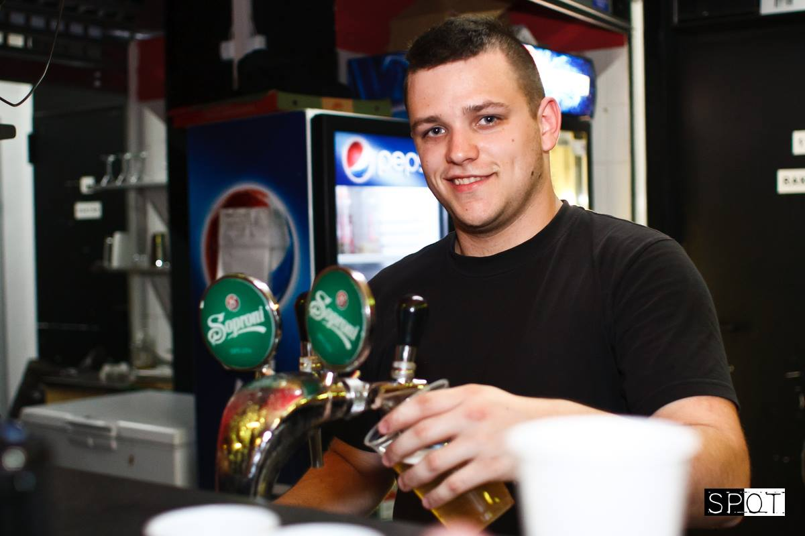

a bme-vik bemutatja...
fesztiválhét
programok
hétfő
kedd
szerda
00:00 Vörös Kakas Fogadó - megnyitó
20:00 La'Place Café, Bor Baráti Kör, Játszóház
21:00 Könnyűzenei program
21:30 Silentio Kórus
22:30 Bűvészkör
23:00 Könnyűzenei program
20:30 Parkett Klub - Betyár Party
22:00 Koncert, részletek hamarosan
csütörtök
péntek
19:00 Lanosch, Játszóház, Local Heroes Szerepjátszó Kör, Bor Baráti Kör - borkóstoló, részletek hamarosan
20:00 VIK Szakestély - történelem óra
21:00 ClubCeption - az este folyamán: Bűvészkör
jegyek
Jegyárak
Bővebb információ hamarosan... kollégista pénztárcabarát :)
körök
Játszóház
A Schönherz Játszóház fő célja az örülés/m² faktor növelése a kollégiumban. A Kör kulturált szórakozási lehetőséget nyújt mindazok számára, akik társasjátékozni szeretnének, vagy éppen egy kellemes teára vágynak. A játékok kölcsönzésére is lehetőséget biztosítunk.
Bor Baráti Kör
Mindig is érdekelt a bor világa? Vagy szeretnéd tudni, hogyan zajlik egy borkóstoló? Fesztiválhéten a Bor Baráti Kör tart egy gyorstalpaló bevezetést a borkóstolás alapjairól, természetesen, nem a könyvből felolvasva, hanem pár deci rendkívül finom bor kíséretében, szokásunkhoz híven, kollégista áron.
SPOT
A SPOT a szokásoknak megfelelően idén is az erőforrásait meghazudtolva próbálja a kollégiumi rendezvényeket megörökíteni, ahogy tette a korábbi félévekben is. Ezekről az eseményekről a legjobb, vagy leghangulatosabb képeinket a Fesztiválhét teljes időtartama alatt egy nagyszabású kiállítás keretei közt is megtekinthetitek. Természetesen a körünk nemcsak ezen a területen képviseli magát, a körtagok saját szórakoztatásukra is készítenek fotókat, melyek híven tükrözik sajátos egyéniségüket. A rendezvényfotóink mellett néhány érdekes, izgalmas és kreatív alkotásunkat is megtekinthetitek.
Local Heroes Szerepjátszó Kör
A szerepjátszó kör 'Magic: The Gathering' kártyajátékkal vár titeket. Hozzátok a saját paklitokat, vagy rakjatok össze egyet a helyszínen az ott lévő rengeteg lapból, és próbáljátok megverni a körös BOSS paklit! Egy biztos: nem lesz egyszerű feladat!
Vörös Kakas Fogadó
Több mint 2 évtizede a Schönherzesek kedvenc melegszendvicseivel várunk titeket a Fesztivál hét nyitó estéjén is. Vörös fények, vörös asztalterítők, mosolygós pincérek, friss és rengeteg féle melegszendvics. Különleges heti ajánlattal készülünk nektek, melyről érdeklődjetek pincérjeinknél. Találkozzunk vasárnap este 9 órakor a körfolyosón, és nyisd meg velünk te is a Schönherz legemlékezetesebb Fesztiválhetét.
ClubCeption
Péntek este a hét zárásaként gyertek le egy jó kis CC bulira! A fesztiváli hangulat kiteljesédése garantált! Üljetek le egy sörre vagy játszatok egyet a biliárdasztalnál és közben osszátok meg egymással a legjobb sztorikat! Mindehhez a helyszínt és az elengedhetetlen zenét mi biztosítjuk!
La'Place Café
A La'Place Café turmixairól, forrócsokijairól és persze a browniejáról híres, melyeket nyitásainkon, nagyjából hetente, meg is kóstolhattok. Az első szintet ilyenkor megtölti a kávéillat, halk beszélgetések zaja, kellemes zene.. és mi ezt szeretjük, ezért csináljuk ;) A KultúrNight nevű esteken is megjelenik körünk, ahol élő zenekarok szolgáltatják hangulatos aláfestést egy kellemes estéhez. A fesztiválhét alkalmából special edition italokkal várunk titeket egy különleges KultúrNight keretében.
Bűvészkör
A kör célja, hogy összefogja a bűvészet irtánt érdeklődőket. A gyűléseink során bemutatjuk egymásnak legújabb trükkjeinket, és hasznos tanácsokkal látjuk el egymást a fejlődés érdekében, vagy segítünk az első trükkök megtanulásában azoknak, akik csak most kezdenek el foglalkozni a bűvészettel. Tagjainknak fellépési lehetőséget biztosítunk, legyen szó akár close up, akár színpadi bűvészetről.
Silentio Kórus
Tavaszi repertoárunk legjavát gyűjtöttük össze Nektek, hogy a koncert szünetében se maradjatok hallgatnivaló nélkül. Érdemes lesz a színpad előtt maradni, a kórusmuzsika kedvelőinek mindenképpen, de akik inkább számítógépes játékokat szeretik, talán még nekik is tartogatunk meglepetéseket.
Parkett Klub
Szívesen betyárkodnál a Fesztivál héten? Szeretnéd ha átjárna az igazi magyaros életérzés? És mindezt közvetlen közeledben, a Schönherz falai között? Akkor gyere, és őrizd velünk hagyományainkat! Idén tavasszal is egy felejthetetlen élőzenés táncházzal várunk! Jó hangulat, közösség és örömteli szórakozás olyan évezredes kincsekkel, mint a magyar muzsika, jó pálinka és pödrött bajusz. A teljesen kezdők se tántorodjanak el, hiszen az este alatt folyamatos táncoktatás segíti az alaplépések elsajátítását!
Lanosch
Ha imádod a videójátékokat, szereted a sört, vagy csak szeretnél egy estét szórakozással a barátaid társaságában eltölteni, akkor itt a helyed köztünk! A Fesztiválhét keretében egy fergeteges LAN-partyban vehetsz részt!
Ne feledd: "lanni vagy nem lanni"
VIK Szakestély
Érdekel a szakestek története? Érdekel, hogy mik a különbségek a Selmecbányai és a Villanykaros szakest között? Gyere el hozzánk, hozz magaddal nedüt a korsódban (ha nincs korsód az se baj, adunk egyet kölcsön, hogy tudj koccintani velünk) és szívesen mesélünk neked erről a szokásról. Ha csak egyszerűen picit lazítani támad kedved, akkor is gyere el hozzánk, és Cantusaink segítségével kiénekelheted magadból bánatod, vagy csak egyszerűen átadhatod magadat a szakestes hangulatnak.
kapcsolat
Antal János Benjamin - Kovi
 antal.janos.benjamin(kukac)gmail.com
antal.janos.benjamin(kukac)gmail.com+3630/205-4546
Bozsódi Márton - Marci
martonbozsodi(kukac)gmail.com+3620/418-8847